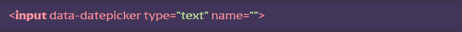

Підключення функціоналу
[JS] У файлі js/app.js розкоментувати рядок import ‘./files/forms/datepicker.js’
[SCSS] Розкоментувати рядок @import «datepicker»; у файлі src/scss/base/forms/forms.scss — це підключить базові стилі календаря. Відредагувати стилі під свої потреби можна у файлі src/scss/base/forms/datepicker.scss
Використання модуля
[HTML] До тегу <input> додаємо HTML-атрибут data-datepicker.
Налаштування та функціонал модуля
алаштування модуля можна змінювати у файлі src/js/files/forms/datepicker.js. Документація плагіна https://www.npmjs.com/package/js-datepicker